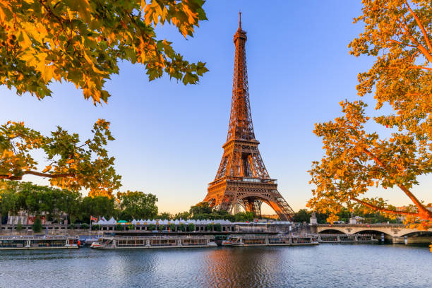

Destinații de călătorie populare
Paris, Franța

- Descoperă orașul iubirii, cu cele mai frumoase monumente și muzeele celebre.
- Parisul este cunoscut pentru atracțiile sale turistice de renume mondial, cum ar fi Turnul Eiffel, Muzeul Luvru și Catedrala Notre-Dame.
- Plimbă-te pe Champs-Élysées, bulevardul faimos pentru magazinele sale de lux și cafenelele elegante.
- Nu rata o vizită la Montmartre, cartierul boem al artiștilor, unde poți admira Bazilica Sacré-Cœur și străzile pitorești.
- Parisul este, de asemenea, un paradis pentru gurmanzi, oferind o varietate de restaurante și patiserii unde poți savura delicii culinare franțuzești.
- În plus, orașul găzduiește numeroase evenimente culturale și festivaluri pe tot parcursul anului, oferind o experiență de neuitat pentru toți vizitatorii.
Bali, Indonezia

- Relaxare și peisaje exotice într-o locație de vis.
- Bali este cunoscut pentru plajele sale spectaculoase, templele antice și cultura vibrantă.
- Vizitează Templul Uluwatu, situat pe o stâncă înaltă, oferind priveliști uimitoare asupra oceanului.
- Explorează terasele de orez din Tegallalang, un peisaj iconic al insulei Bali.
- Participă la o ceremonie tradițională balineză și descoperă obiceiurile și tradițiile locale.
- Bali oferă, de asemenea, oportunități excelente pentru snorkeling și scufundări, cu recife de corali și viață marină diversă.
Tokyo, Japonia

- Explorează amestecul perfect între tradiție și modernitate în inima Japoniei.
- Tokyo este un oraș vibrant, cunoscut pentru zgârie-norii săi, tehnologia avansată și cultura tradițională.
- Vizitează Templul Senso-ji, cel mai vechi templu din Tokyo, situat în districtul Asakusa.
- Descoperă cartierul Shibuya, faimos pentru intersecția sa aglomerată și pentru viața de noapte animată.
- Plimbă-te prin Grădinile Imperiale și admiră frumusețea naturală și arhitectura tradițională japoneză.
- Tokyo oferă o varietate de experiențe culinare, de la sushi și ramen la delicatese locale unice.
- Orașul găzduiește numeroase festivaluri și evenimente culturale, oferind o experiență autentică a vieții japoneze.